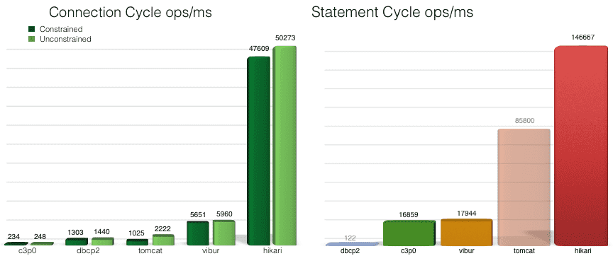

-
Jenkins 是开源 CI&CD 软件领导者， 提供超过1000个插件来支持构建、部署、自动化， 满足任何项目的需要。
2020-02-16 19:52:24
-
这个可以在前端自动刷新页面，与 JRebel 有些区别。
2020-02-16 18:36:54
-
Maven是一个项目管理工具，它包含了一个项目对象模型，一组标准集合，一个项目生命周期，一个依赖管理系统，和用来运行定义在生命周期阶段(phase)中插件(plugin)目标(goal)的逻辑。
2020-02-12 19:55:38
-
“要安装，请拖动此图标......”不会再出现了。现在使用 brew 或 brew cask 可以直接安装 macOS 应用程序、字体和插件以及其他非开源软件。
2020-02-12 09:57:20
-
Redis 的复制功能是支持多个 redis 之间的数据同步。
2020-02-10 21:52:19
-
Redis - REmote DIctionary Server，即：远程字典服务，Redis 是一个开源的key-value内存数据库，也就是基于Key-Value模式Memcached + Database Persistence。
2020-02-10 21:03:19
-
Kibana 是一个开源的分析和可视化平台，设计用于和 Elasticsearch 一起工作。 你用 Kibana 来搜索，查看，并和存储在ES索引中的数据进行交互。 你可以轻松地执行高级数据分析，并且以各种图标、表格和地图的形式可视化数据。
2020-02-10 13:09:37
-

Logstash 作为一个数据管道中间件，支持对各种类型数据的采集与转换，并将数据发送到各种类型的存储库，比如实现消费 kafka 数据并且写入到 ES，日志文件同步到对象存储S3等，mysql 数据同步到 Elasticsearch 等。
2020-02-10 12:58:20
-
Elasticsearch 是一个基于 Lucene 的搜索服务器，也是当今最先进，最高效的全功能开源搜索引擎框架。
2020-02-10 12:56:51
-
敏捷开发：就是把一个大项目分为多个相互联系，但也可独立运行的小项目，并分别完成，在此过程中软件一直处于可使用状态。
2020-02-10 12:40:51
-
Spring boot 非常适合做微服务，如果再加上 docker ，完美了！
2020-02-09 21:26:44
-
Docker 是一个开源的应用容器引擎，让开发者可以打包他们的应用以及依赖包到一个可移植的镜像中，然后发布到任何流行的 Linux或Windows 机器上，也可以实现虚拟化。容器是完全使用沙箱机制，相互之间不会有任何接口。
2020-02-09 19:36:16
-
SkyWalking: 针对分布式系统的应用性能监控，尤其是针对微服务、云原生和面向容器的分布式系统架构 简介 SkyWalking 是一款开源的应用性能监控系统，包括指标监控，分布式追踪，分布式系统性能诊断。
2020-02-09 18:58:58
-
MySQL是一个关系型数据库管理系统，由瑞典MySQL AB 公司开发，属于 Oracle 旗下产品。MySQL 是最流行的关系型数据库管理系统之一
2020-02-08 10:27:43
-
Linux是一套免费使用和自由传播的类Unix操作系统，是一个基于POSIX和Unix的多用户、多任务、支持多线程和多CPU的操作系统。
2020-02-07 20:45:14
-
MongoDB 是基于分布式文件存储的数据库，提供可扩展的高性能数据存储解决方案，介于关系数据库和非关系数据库之间的产品，是非关系数据库当中功能最丰富，最像关系数据库的。
2020-02-07 17:43:33
-
Mac 环境下的 Java 开发
2020-02-07 17:34:48
-
The World's Most Advanced Open Source Relational Database！
2020-02-07 10:50:28
-
Git is a free and open source distributed version control system designed to handle everything from small to very large projects
2020-02-06 20:43:37
-
GitLab 是一个用于仓库管理系统的开源项目，使用Git作为代码管理工具，并在此基础上搭建起来的web服务
2020-02-06 20:22:51
-
Nacos 致力于帮助您发现、配置和管理微服务。Nacos 提供了一组简单易用的特性集，帮助您快速实现动态服务发现、服务配置、服务元数据及流量管理。
2020-02-06 20:01:41
-
Nginx("engine x")是一款是由俄罗斯的程序设计师 Igor Sysoev 所开发高性能的 Web 和 反向代理 服务器，它的特点：安装简单、配置文件简洁、Bug 少、启动容易、几乎7*24不间断运行、数月不需重启。
2020-02-06 19:53:29
-
FFmpeg 是一套可以用来记录、转换数字音频、视频，并能将其转化为流的开源计算机程序。
2020-02-06 19:47:18
-
免费的社区版完全可以满足日常开发
2020-02-04 21:20:47
-
在 GitHub 无法连接的时候的解决方法
2020-02-04 19:33:13
-
微信公众平台，简称公众号。曾命名为“官号平台”、“媒体平台”、微信公众号，最终定位为“公众平台”。
2020-02-03 19:09:20
-
Tengine是由淘宝网发起的Web服务器项目。它在Nginx的基础上，针对大访问量网站的需求，添加了很多高级功能和特性。Tengine的性能和稳定性已经在大型的网站如淘宝网，天猫商城等得到了很好的检验。它的最终目标是打造一个高效稳定安全易用的Web平台。
2020-02-02 19:46:16
-
Tomcat 是Java 最著名的开源Web容器，开源、简单、易用、稳定性极好。而 Undertow 是一款基于 NIO 的高性能 Web 嵌入式服务器，轻量级、高性能、提供阻塞或基于 XNIO 的非阻塞机制。
2020-02-02 13:43:50
-
敏捷团队的首选软件开发工具
2020-01-31 21:34:40
-
小型服务器
2020-01-31 20:58:29
-
JRebel and XRebel enable Java development teams to create better applications, faster.
2020-01-31 20:58:15
-
Linux 下安装 JDK，Windows 下安装 JDK，Mac 下安装 JDK
2020-01-31 20:58:09
-
中国有句俗语讲：“可怜天下父母心”，父母“望子成龙、望女成凤”的心情每个人都理解，但是教育子女需要讲究方式方法，古人就总结出育子“七不责”。为人父母的你怎么可以不知道！！
2020-01-31 20:57:46